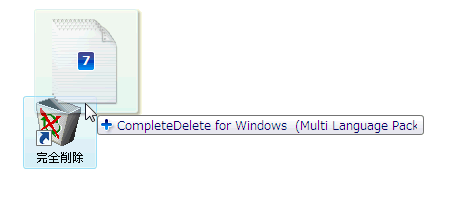
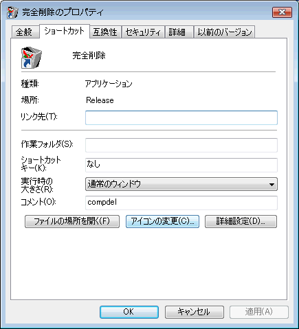

| 完全削除の方法 |
|
| 完全削除の方法 |
|
エクスプローラを起動します。
完全削除したいファイルをクリックして選択します。
選択されたファイルを、｢完全削除｣アイコンにドラッグ＆ドロップします。

エクスプローラを起動します。
完全削除したいファイルをクリックして選択します。
選択されたファイルを、右クリック・メニューの｢送る｣に送ります。
デスクトップに表示されている「完全削除のアイコン」は、アイコンを右クリックした時に出るメニューで「プロパティ」を選択すると変更できます。

ワープロ・ソフトや表計算・ソフトなどはバックアップ(予備保管)ファイルやテンポラリ(一時的に使用する)ファイルを自動的に作ることがあります。これらのファイルは削除済みファイルの不正復活に使用されることもありますので、その存在には気をつけてください。
 バックアップ・ファイルを作成しないようにしよう
!
バックアップ・ファイルを作成しないようにしよう
!
ワープロや表計算の環境設定で｢バックアップを作らない｣に必ずチェックを入れる。どうしてもバックアップがないと不安な人は、｢完全削除｣するときに、必ずバックアップ・ファイルも同時に削除しましょう。
バックアップ・ファイルは通常.BAK拡張子のファイルです。
 テンポラリ・ファイルもこまめに削除しよう
!
テンポラリ・ファイルもこまめに削除しよう
!
テンポラリファイルには2種類あり、ワープロや表計算の自動保存のためにデータ・ファイルと同じフォルダに作成されるものと、一般的な仮想記憶のためにテンポラリ・フォルダに作成されるものに分けられます。
前者は、Microsoft Wordでは編集中に~$XXX.DOCなどという隠しファイルで作成されます。これは編集中のファイルそのものですので、データファイルの完全削除の時に「ダミーファイル削除痕跡による復活妨害」を必ずＯＮにして削除して下さい。
後者は、TMP環境変数で示されたフォルダまたはC:\Windows\tempフォルダ等に保存されています。プログラム終了時にそのまま残っている場合もありますので、定期的に削除したほうがいいでしょう。
テンポラリ・ファイルは通常 .TMP拡張子のファイルです。
DOSのブートアップ・プロセスを知っている人は下記の変更で、テンポラリ・ファイル自動削除のためにAUTOEXEC.BATを変更できます。なお、TEMP環境変数が設定されていないと仮定しています。また、C:\My Documents\Dummyには数十個の小さなダミーファイルが用意されていると仮定しています。
Windows｢メモ帳｣を起動します。
｢ファイル｣−｢開く｣メニューで、｢C:\AUTOEXEC.BAT｣を開きます。
次の3行を、ファイルの最後に付け加えます。
｢DEL C:\WINDOWS\TEMP\*.TMP｣
｢COPY C:\MYDOC~1\DUMMY\*.TMP C:\WINDOWS\TEMP｣
｢DEL C:\WINDOWS\TEMP\*.TMP｣
ファイルを保存し終了します。
スタートアップメニューの「スタートアップ」フォルダをエクスプローラで開きます。
DeleteTemp.cmd 等、拡張子が .cmd のファイル （95/98/Me では .bat
のファイル）を作成します。
ひとつ上のトピックで説明した「del *.tmp」等のバッチ・スクリプトを必要なだけ記述します。
物理メモリの不足を補うために、仮想メモリ・ファイルが（通常は）Windows起動ドライブに作られます。この中にWindows起動中のメモリーの一部がスワップアウトされていますので、ワープロなどで編集中の生データが格納される可能性もあります。
Windowsのカスタマイズ・ツール（フリー・ソフトウエア等）で、この仮想メモリ・ファイルを自動削除する設定が出来ます。
また、十分な物理メモリのあるコンピュータでは仮想メモリを使わないという設定をすればより安全になります。